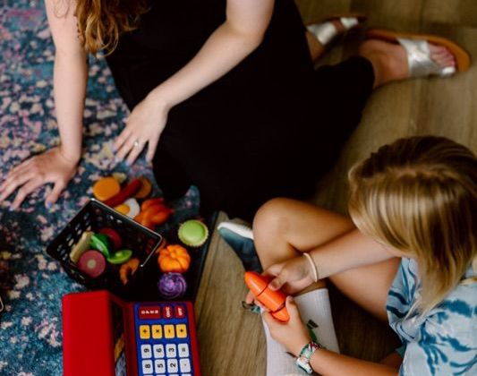

Çocuk Merkezli Oyun Terapisi
"Oyun çocuğun dili, oyuncaklar ise kelimeleridir." Çocuğun iç dünyasını anlamak için oyunun iyileştirici gücü.
Devamını OkuRuh sağlığı, psikoloji ve iyi oluş üzerine güncel paylaşımlar.
"Oyun çocuğun dili, oyuncaklar ise kelimeleridir." Çocuğun iç dünyasını anlamak için oyunun iyileştirici gücü.
Devamını Oku
Ergenlikte kimlik dönemeci, bireyselleşme sancıları ve aile içi dengelerin yeniden inşası.
Devamını Oku
Terapide karar verme süreci, içsel çatışmalarla çalışmak ve ilişkinin geleceğini belirlemek üzerine.
Devamını Oku
Psikoterapi neden tavsiye verme yeri değildir? Kendi içsel kaynaklarınızı keşfetme yolculuğu.
Devamını OkuKaygı sadece bir başarı meselesi mi, yoksa sevilme ve onaylanma ihtiyacının bir yansıması mı?
Devamını Oku
Terapi neden haftalık olur? İyileşme süreci ne kadar sürer ve ne zaman biter?
Devamını OkuÇocuğun hareketliliği biyolojik bir sorun mu, yoksa ruhsal bir mesaj mı? Dikkat sorunlarına derinlemesine bakış.
Devamını Oku